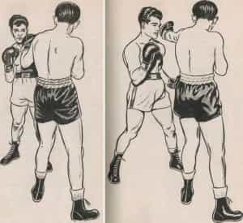
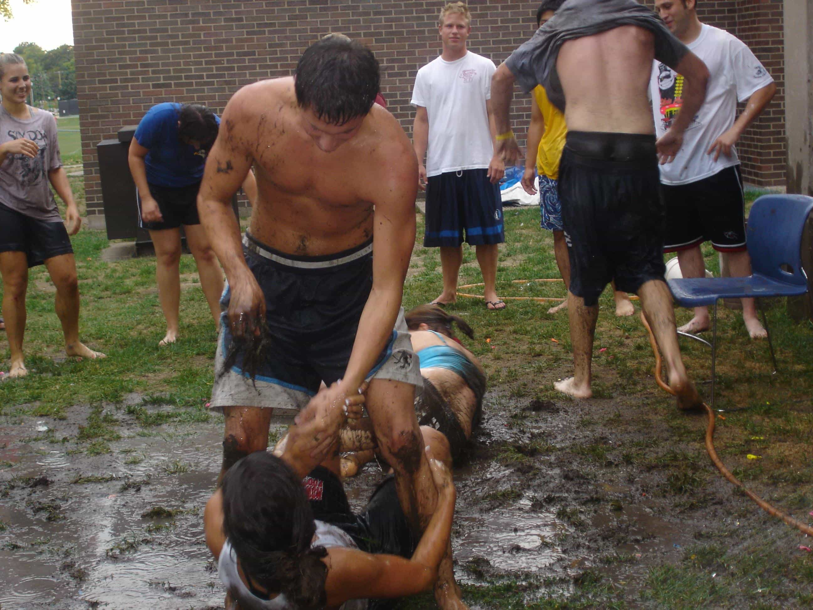
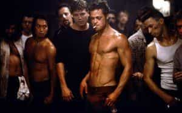

DISCLAIMER: The author does not encourage violence of any kind, nor is physical confrontation promoted in this article. That being said, when your ass is on the line and you have no choice but to fight to survive and perhaps protect the lives of your wife and children, then you do what nature intended and you’d better win!
Street fights were much more common when I was a kid. Sometimes they just happened and you could not avoid it. Some kids were genuine dickheads, but for the most part we were just feeling each other out and trying to find out who the toughest kids were. Today, boys are being encouraged to be helpless and run to an authority figure. We called them “rats” back in the day. The very real danger of gun violence and retaliation have now made street fights much more hazardous. Pussyhats and psychopaths with a penchant for revenge are now everywhere.

Let’s forget all of that for a moment and pretend it’s 1950 and the shit is about to go down. Before that moment happens you must make an honest assessment of yourself. Are you prepared for this physically, and have you been in a fist fight before?
I had two younger brothers growing up and I “played” with them daily. That meant a lot of punching to the chest and arms, and a lot of wrestling because most fights go to the ground. Fast forward to today. Do you know how to properly make a fist? Do you know how to use your arms to protect your head? Can you “stuff” a wrestler’s takedown? Are you aware of footwork and head movement? Have you ever hit a heavy bag? Those things in my opinion are basic hand-to-hand fighting skills.

If you’ve never been in a fight before, your heart will be pumping like never before and you’ll be nervous as fuck. Assuming you didn’t bring this event upon yourself you need to begin to assess your opponent. Weapons are an immediate deal breaker unless you are better armed. Your best strategy at that point is to create distance and use obstacles like cars and buildings to cover your escape. Run, period.
If this is a straight up fist fight you have to consider the condition of your opponent. Does he seem bigger, stronger, super fit and not nervous at all? In that case you need to escape as well or fight dirty. Most likely the person in front of you is just as nervous, and physically unprepared for conflict as you are, but this business has to get done.
If you did not choose this confrontation, but you know you’re in it and there’s no getting out of it, follow some age old advice, “Strike first, strike hard and don’t stop striking until the fight is done”. Your jab is essential, it’s a short, straight punch that delivers a message while not exposing you too much. It also doesn’t waste too much energy. Guys who have no idea what they are doing will throw wild “haymaker” type punches and typically charge you to get their arms around you.
Moments into the fight you will feel light headed, your lungs and muscles will start to scream at you. You must become your own Drill Sergeant and demand fighting spirit from yourself. Remember, the other guy is exhausted too. A nice upper cut or hook punch can be a great finisher, aim for the side of the chin or underneath the chin if possible.
If the guy goes to grab you, push him off with both hands as hard as possible and follow up with a stiff jab. Whatever you do, protect your genitalia at all costs. Forget about honor and fighting fair and all that once upon a time bullshit, fuckers will pull your hair, bite you and grab your balls as soon as they feel like they are losing.

Assuming you have not gotten your ass kicked by this point, there should be a lull in the fight. Chances are you are both feeling like you’re breathing through a straw and that may very well lead to an end to hostilities. Do not expect to knock your man out. That shit only happens in scripted movies and bullshit television.
If you are ready to disengage keep your hands up and back away slowly, do not turn your back, ever! If he’s cool with parting ways try to round a corner or something then take off running. This way you are clear of the action and your adrenaline dump will go straight to your feet. If he’s still game however you need to charge in there and drive one straight down the pike. This is called initiative.
By taking the initiative you force your opponent to respond to you. If successful you may want to try a flurry of punches to end the fight. The tactic is to overwhelm them into a psychological defeat. You’ll know when the guy is beaten, he’ll be covering up and want nothing to do with you. Make your exit post haste and just be thankful you’re not the one on the ground.
Back to reality!
This little exercise is to get you to think about what it’s like to be in a real fight. Don’t be foolish enough to believe that it can’t happen. By visualizing the conflict you take some of the emotion out of it; the fear out of it. You also need to ask yourself if you are prepared to fight to the death in extreme circumstances. Desperate, hungry people can turn your world upside down. Don’t believe me? Check out what is happening in Venezuela right now.

Ultimately the best way of preparing to defend yourself is to find a good instructor or trainer and learn how to defend yourself. There are many good boxing and MMA gyms out there that can help train you the right way. Do your homework, make sure they are friendly and the place is clean and well organized. Make sure you have a good feeling about the instructor or trainer. The manly art of self-defense is just that. There are no dangerous weapons, only dangerous people. Be the weapon!
Read Next: 4 Improvised Weapons To Look Out For During A Fight